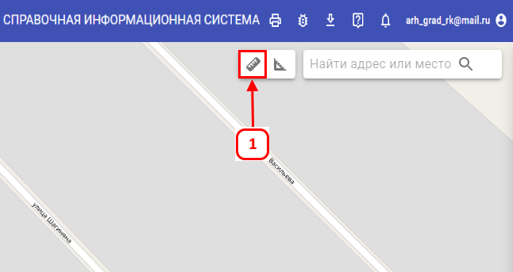
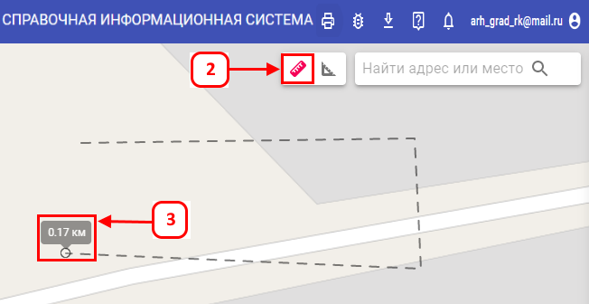
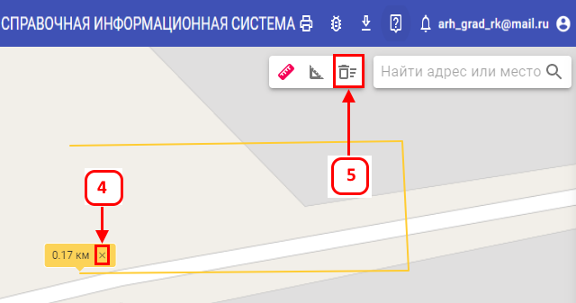

Измерение длины
-
Для того чтобы измерить длину объекта необходимо в правом верхнем углу нажать кнопку «Измерить длину» (1) кнопка
становится активной (изменяет цвет)
-
После того, как кнопка стала активной (2), необходимо кликнуть левой кнопкой мыши в произвольном месте на карте. От
места первого клика рисуется линия, над курсором есть подсказка с текущим значением длины(3), в последней точке
делается двойной клик.
-
Линия и подсказка меняют свой цвет, а также у подсказки появляется иконка с удалением(4), а также в панели
инструментов рядом с кнопками линеек появляется кнопка «Удалить все измерения»(5)


